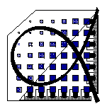

Informations for MMAlpha developers
Back to welcome page
Up!
Writing a MMAlpha package
In order to obtain readable, maintainable, and safe code,
some rules regarding the development of packages should be followed.
- The package must but written along some conventions
which are best seen while reading this
example.
- The package must be delivered together with a test program which follows the testing strategy of MMAlpha. See
this before writing the
package. Indeed, testing starts at the same time as writing, since
the first tests are those who are used during development.
- The package must
be delivered together with a documentation notebook.
As we recommend developing packages directly from Mathematica
notebooks, the initial development notebook is a good candidate
to becomming a documentation notebook.
See
this to get more information.
Content of this directory
Last modification: May 26, 2006.
To get more info:
Patrice.Quinton@irisa.fr